In this blogpost, I’ll simulate data to show how conditioning on as many variables as possibleis not a good idea. Sometimes, conditioning can lead to de-confound an effect; other times, however, conditioning on a variable can create unnecessary confounding and bias the effect that we are trying to understand.
It all depends on our causal story: by applying the backdoor-criterion to our Causal Graph, we can derive an unambiguous answer to decide which variables should we use as controls in our statistical analysis.
Motivation
In the last couple of posts, we’ve seen how to define causal effects in terms of interventions and how to represent these interventions in terms of graph surgeries. We’ve also seen that observational data undetermines interventional data. Therefore, we cannot gain causal understanding unless we accompany our data-analysis with a causal story.
In particular, we’ve seen that by leveraging the invariant qualities under intervention, we are able to estimate causal effects with the adjustment formula by conditioning on the parents of the exposure \(X\):
\[
P(Y=y|\text{do}(X=x)) = \sum_{z} P(Y=y | X=x, pa=z) P(pa=z)
\] However, what happens when we do not measure the parents of \(X\) and thus cannot adjust for them? Can we adjust for some other observed variable(s)?
Of confounding
Let’s say that we are interested in estimating the causal effect of \(X\) on \(Y\) and we assume the following Causal Graph:
example <-dagify(z ~ b + c, a ~ b, d ~ c, x ~ a + z, w ~ x, y ~ w + z + d)ggdag(example) +labs(title ="We want to estimate x -> y",subtitle =TeX("But we don't observe $A$ and thus we cannot use the adjustment formula"))
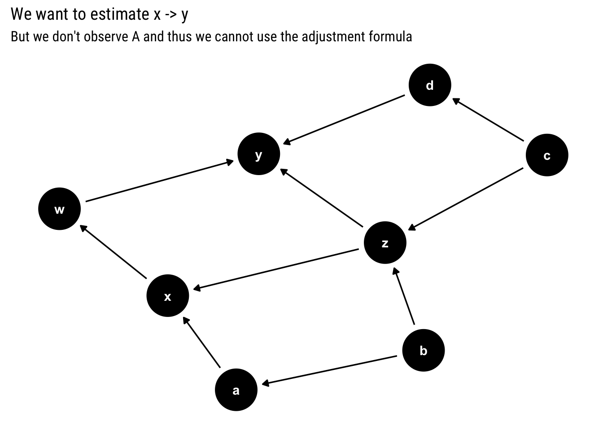
The adjustment formula above states that we should adjust for the parents of \(x\). However, assume that we cannot measure\(a\). Can we still estimate the causal effect?
To answer this question we must understand why is that it’s useful to adjust for the parents. First, remember that in a Causal Graph, the statistical information flows freely in the Graph, regardless of the direction of the arrows. Therefore, in the above graph, the causal information from \(c\) to \(y\) may end up getting picked up by \(x\) or vice versa.
We condition on the parents of \(x\) such that we block all the information coming from other causal relationships. Thus, we don’t end up adding up the causal effect of some other variable in the process. However, if we cannot control by its parents, it’s possible that some of this causal effect coming from other variables will be picked up by \(X\) through the arrows that go into it. Therefore, we will have confounding bias. Which we defined thus:
\[
P(Y | \text{do(X = x)}) \neq P(Y| X=x)
\]
Blocking non-causal paths
For example, in the above graph there are the following 4 paths from \(X\) into \(Y\):
ggdag_paths(example, from ='x', to ='y', shadow = T) +labs(title ="Paths from x into y",subtitle ="Of 4 possible paths, only one of them is a causal path")
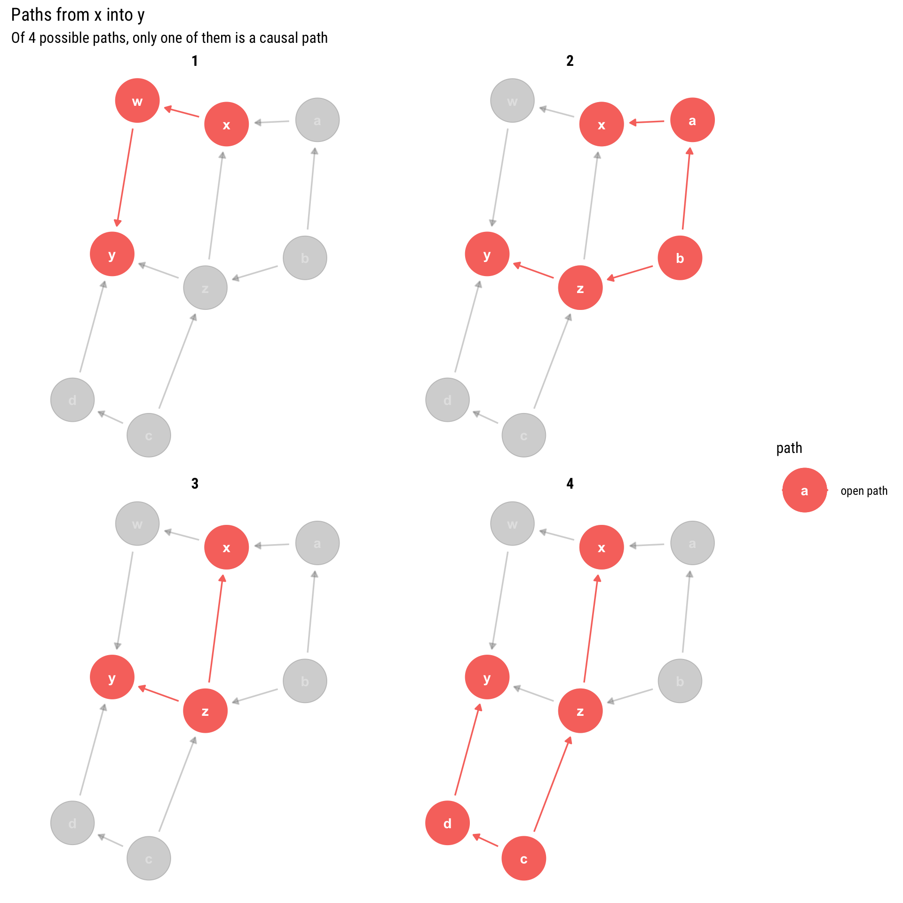
We have 4 paths but only 1 of them is causal: only one is a direct descendant of \(X\). Therefore, if we want to estimate the causal effect, we must make sure that all the other non-causal paths (the backdoor paths that have arrows into X) are blocked. Luckily, we already defined a graphical algorithm to find out which variables we must adjust for in order to block some path: the d-separation criterion.
Therefore, we arrive at the following four possible adjustment sets that guarantee that all non-causal paths will be blocked. By conditioning on them, we will correctly estimate the causal effect:
Let’s see why each of the four available adjustment set works:
By conditioning on \(z\), we open a collider between \(b\) and \(c\). However, the causal effect of \(c\) on \(y\) does not get picked up by \(x\) because we are blocking the path by conditioning on \(a\).
By conditioning on \(z\), we open a collider between \(b\) and \(c\). However, given that we adjust for \(b\), the effect of \(c\) on \(y\) won’t be picked up by \(x\).
By conditioning on \(z\), we open a collider between \(b\) and \(c\). However, given that we adjust for \(c\), the effect of \(c\) on \(y\) won’t be picked up by \(x\).
By conditioning on \(z\), we open a collider between \(b\) and \(c\). However, by adjusting for \(d\), we block the effect of \(c\) on \(y\) and thus this effect won’t get picked up by \(x\).
The Backdoor Criterion
Given that we cannot directly adjust by the parents of \(x\), what variables should we condition on to obtain the correct effect? The question boils down to finding a set of variables that satisfy the backdoor criterion:
Given an ordered pair of variables ( (X, Y) ) in a directed acyclic graph ( G, ) a set of variables ( Z ) satisfies the backdoor criterion relative to ( (X, Y) ) if no node in ( ) is a descendant of ( X, ) and ( ) blocks every path between ( X ) and ( Y ) that contains an arrow into X. If a set of variables ( Z ) satisfies the backdoor criterion for ( X ) and ( Y, ) then the causal effect of ( X ) on ( Y ) is given by the formula [ P(Y=y d o(X=x))=_{z} P(Y=y X=x, Z=z) P(Z=z) ]
Note that the parents of \(X\) always satisfy the backdoor criterion. Notice also, quite importantly, that the criterion simultaneously says which variables we should use as control variables and which ones we shouldn’t. Indeed, by adjusting for the wrong variable we may end up opening a non-causal path into \(x\) and thus introducing confounding bias into our estimates.
Correclty adjusting
Let’s keep working with our current Graphical Model.
ggdag_exogenous(example)
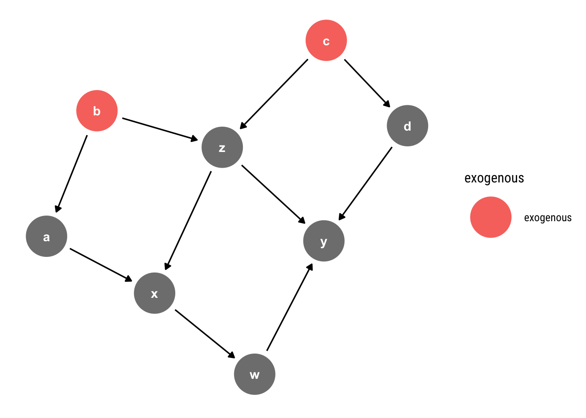
We can simulate data coming from such a model thus :
Thus, the causal effect of one unit of \(x\) on \(y\) is always \(10 = 5 \times 2\). Notice that we have four possible adjustment sets to estimate these causal query and all of these possibilities should yield the same answer. Therefore, this constraint becomes yet another testable implication of our model.
Let’s fit a Gaussian Linear regression with each of the possible adjustment sets and compare the results. But first let’s fit a naive model with no adjustment whatsoever.
data <-data.frame(b, c, z, a, x, d, w, y)model_one <-stan_glm(y ~ x, data = data, refresh =0) model_one %>%spread_draws(x) %>%ggplot(aes(x)) +stat_halfeye(alpha =0.6) +annotate("text", x =10.2, y =0.7, label ="True causal effect", color ="red", family =theme_get()$text[["family"]]) + hrbrthemes::theme_ipsum_rc(grid ="y") +geom_vline(aes(xintercept =10), linetype =2, color ="red") +labs(title ="Causal Inference from Model y ~ x",subtitle ="This estimation overestimates the causal effect due to confounding bias")
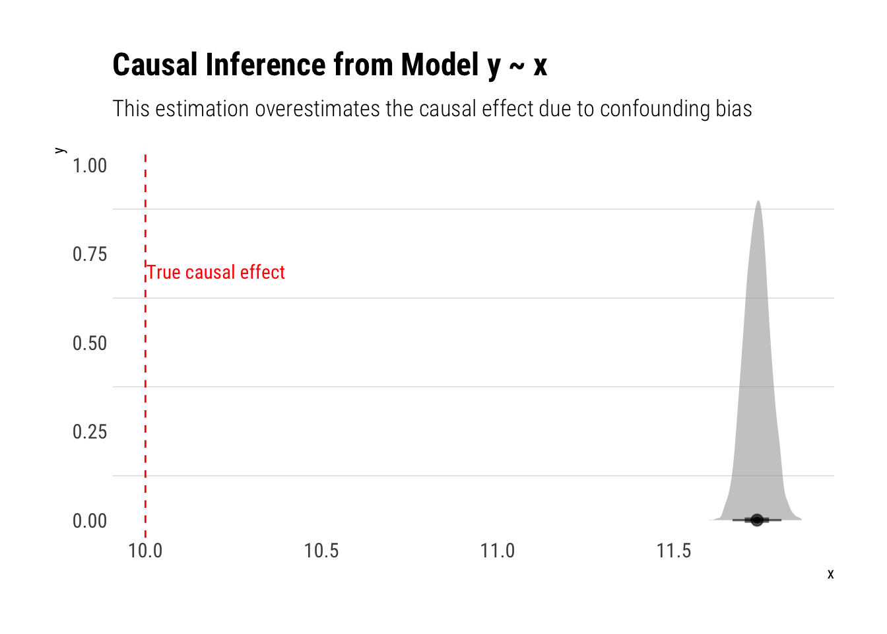
As expected, our estimations are off. Following the backdoor criterion, the following estimations should be unbiased:
model_two <-stan_glm(y ~ x + a +z, data = data, refresh =0)
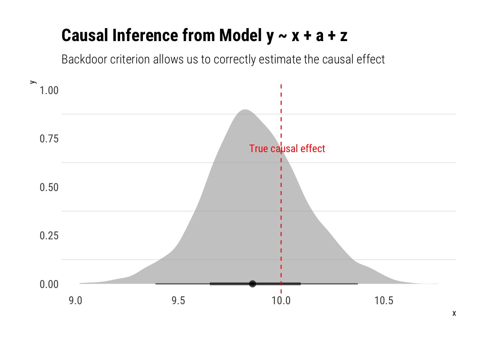
Much better! Let’s check the other models:
model_three <-stan_glm(y ~ x + b +z, data = data, refresh =0)
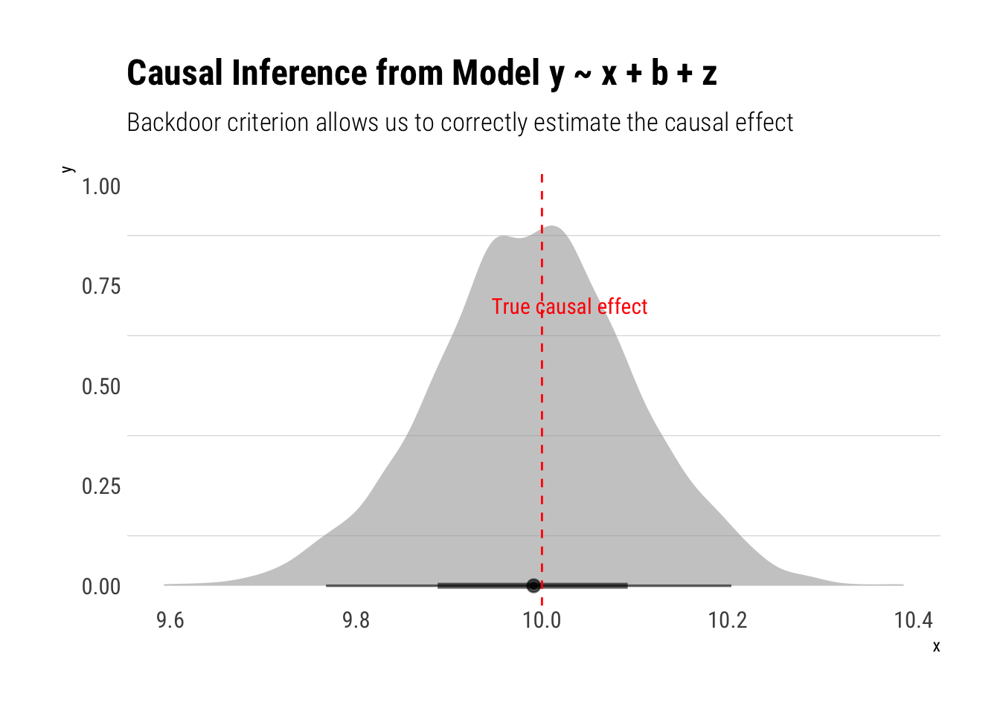
Also a correct estimation! Let’s fit the model where we adjust by \(c\):
model_four <-stan_glm(y ~ x + c +z, data = data, refresh =0)
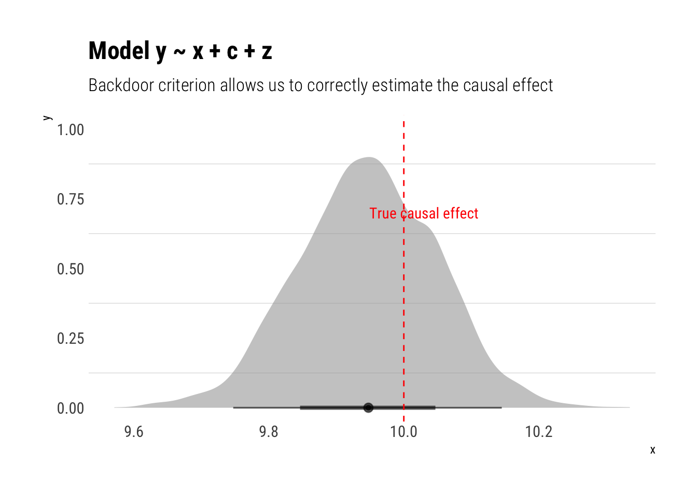
Finally, the model where we condition on \(z, d\):
model_five <-stan_glm(y ~ x + d +z, data = data, refresh =0)
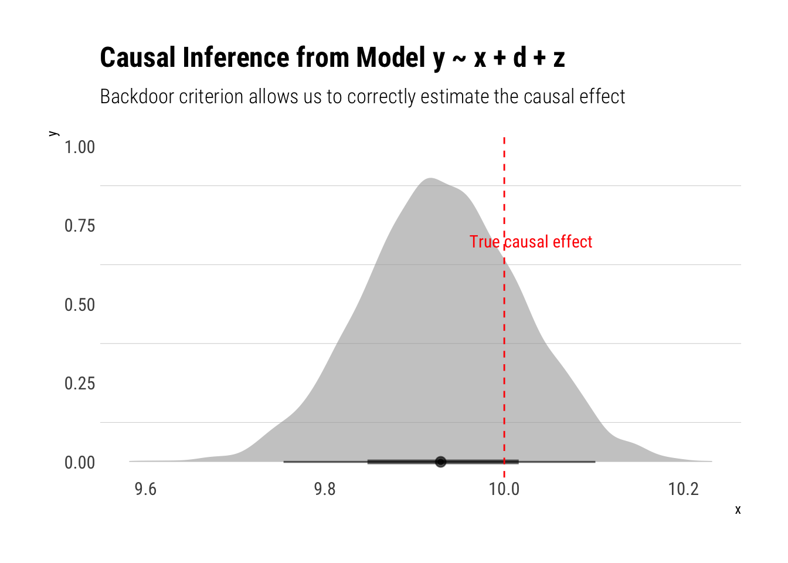
Incorreclty adjusting
Adjusting on a variable can sometimes open backdoor paths that would had otherwise remained closed. Take the following example:
hurting <-dagify(Y ~ X + u1, X ~ u2, L ~ u1 + u2)ggdag(hurting) +labs(title ="If we don't condition on L, the only backdoor path between X and Y is closed")
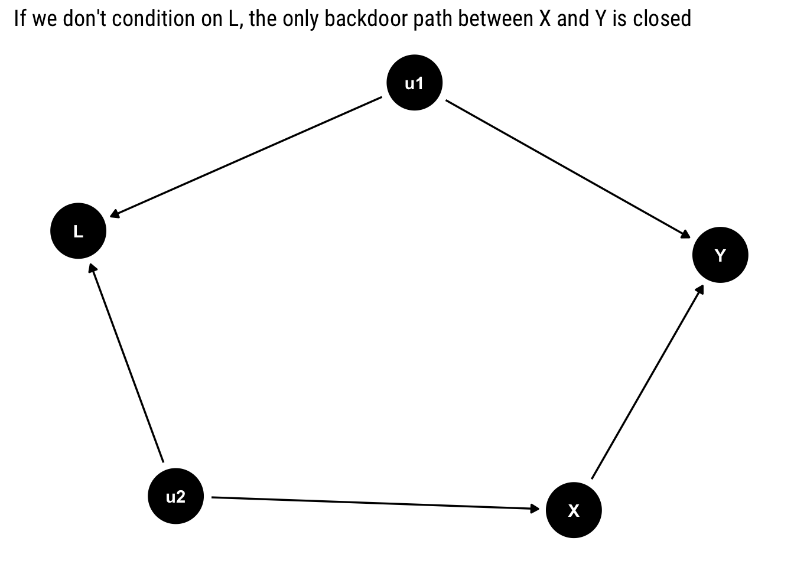
Notice that there is only one backdoor path for \(X\). However, it contains a collider: \(L\). Therefore, unless we condition on \(L\), the backdoor path will remain closed. In this case, we must not adjust for any of the variables, as there is no confounding bias: \(P(Y | do (X = x)) = P(Y| X = x)\).
If we are naive, and we consider that controlling for observables is always a step in the right direction toward causal inference, we will end up with the wrong inference. By condition on \(L\), we open up a collider that will create a relationship between \(u_1\) and \(u_2\); therefore, \(X\) will pick up the causal effect of \(u_1\) on \(y\).
ggdag_adjust(hurting, var ="L") +scale_color_brewer(type ="qual", palette ="Set2") +labs(title ="Conditioning on a collider opens a backdoor path between X and Y")
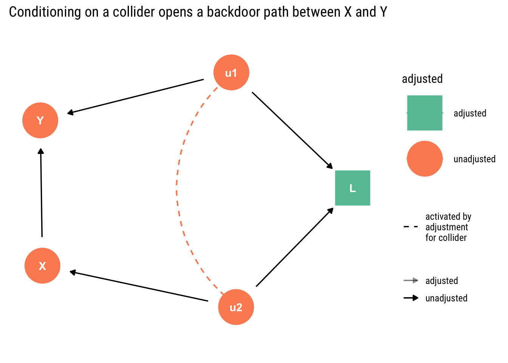
We can easily confirm this insight by simulating some data and fitting models.
u1 <-rnorm(n)u2 <-rnorm(n)x <-2*u2 +rnorm(n)y <-2*x -5*u1 +rnorm(n)l <- u1 + u2 +rnorm(n)data <-data.frame(u1, u2, x, y, l)
Thus, the correct causal effect of one unit of \(x\) on \(y\) is always 2.
First, let’s fit the correct model where we don’t condition on any of the other variables:
model_correct <-stan_glm(y ~ x, data = data, refresh =0)
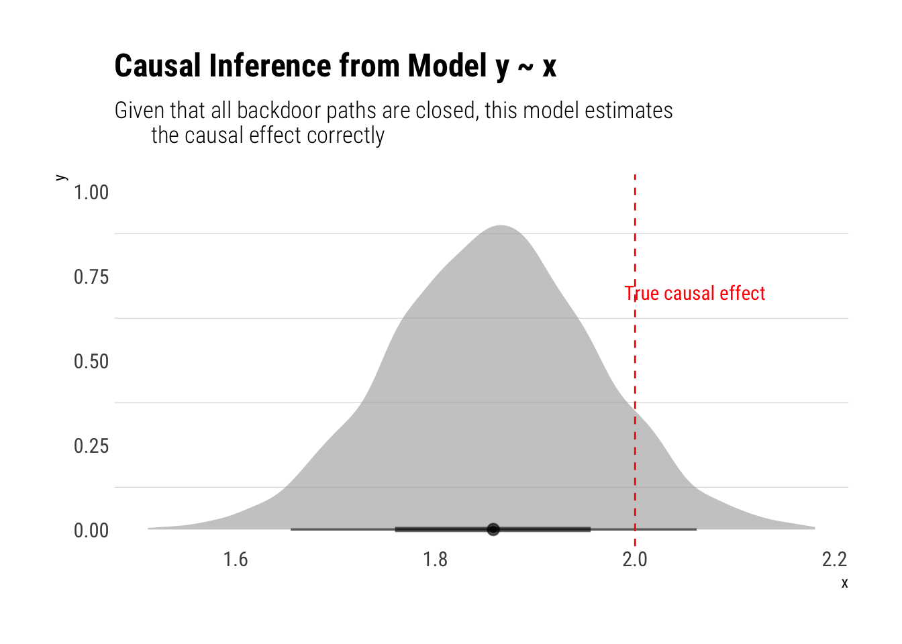
However, if we adjust for \(L\), our estimations will be biased:
model_incorrect <-stan_glm(y ~ x + l, data = data, refresh =0)
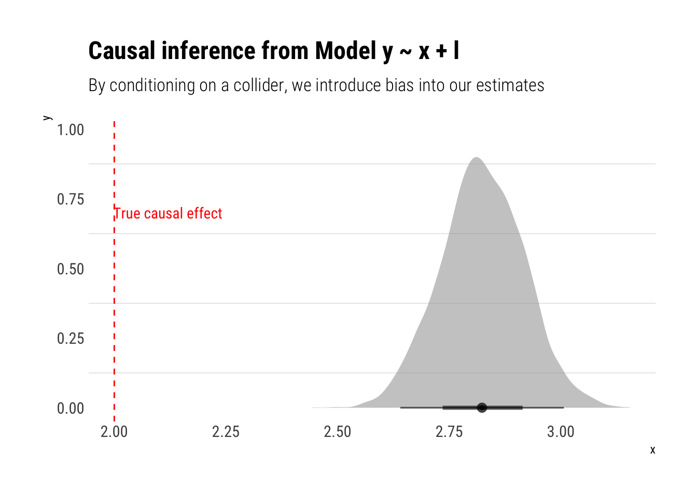
Conclusions
Stats people know that correlation coefficients do not imply causal effects. Yet, very often, partial correlation coefficients from regressions with an ever growing set of ‘control variables’ are unequivocally interpreted as a step in the right direction toward estimating a causal effect. This mistaken intuition was aptly named by Richard McElreath, in his fantastic Stats course, as Causal Salad: people toss a bunch of control variables and hope to get a casual effect out of it.
With the introduction of Causal Graphs, we gain a invaluable tool with the backdoor criterion. With a simple graphical algorithm, we can define which variables we must include in our analysis in order to cancel out all the information coming from different causal relationships than the one we are interested.